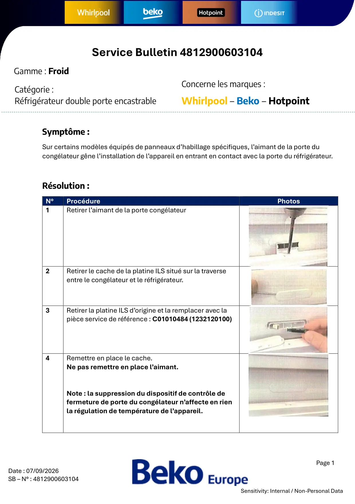
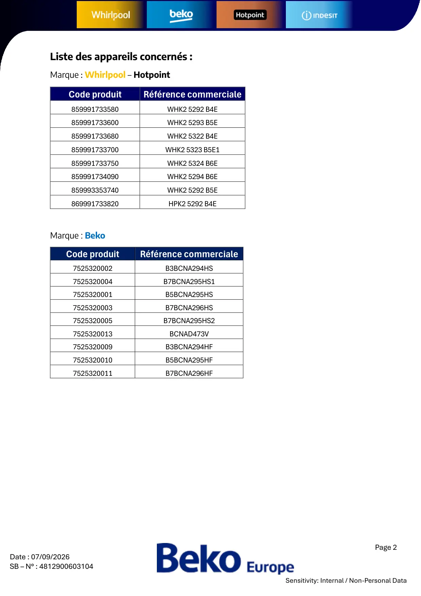
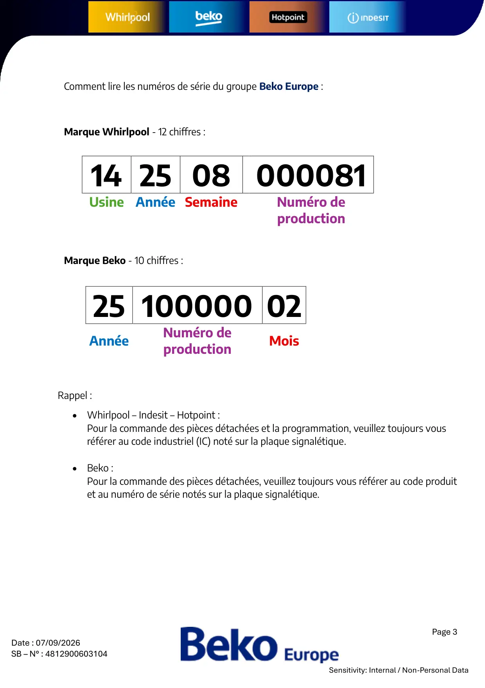

4812900603104 Interference aimant

Page 1Date : 07/09/2026SB – N° : 4812900603104Sensitivity: Internal / Non-Personal DataSymptôme :Sur certains modèles équipés de panneaux d’habillage spécifiques, l’aimant de la porte ducongélateur gêne l’installation de l’appareil en entrant en contact avec la porte du réfrigérateur.Résolution :N°ProcédurePhotos1Retirer l’aimant de la porte congélateur2Retirer le cache de la platine ILS situé sur la traverseentre le congélateur et le réfrigérateur.3Retirer la platine ILS d’origine et la remplacer avec lapièce service de référence : C01010484 (1232120100)4Remettre en place le cache.Ne pas remettre en place l’aimant.Note : la suppression du dispositif de contrôle defermeture de porte du congélateur n’affecte en rienla régulation de température de l’appareil.Service Bulletin 4812900603104Gamme : FroidCatégorie :Réfrigérateur double porte encastrableConcerne les marques :Whirlpool – Beko – Hotpoint
1 / 3
Page 2Date : 07/09/2026SB – N° : 4812900603104Sensitivity: Internal / Non-Personal DataListe des appareils concernés :Marque : Whirlpool – HotpointCode produitRéférence commerciale859991733580WHK2 5292 B4E859991733600WHK2 5293 B5E859991733680WHK2 5322 B4E859991733700WHK2 5323 B5E1859991733750WHK2 5324 B6E859991734090WHK2 5294 B6E859993353740WHK2 5292 B5E869991733820HPK2 5292 B4EMarque : BekoCode produitRéférence commerciale7525320002B3BCNA294HS7525320004B7BCNA295HS17525320001B5BCNA295HS7525320003B7BCNA296HS7525320005B7BCNA295HS27525320013BCNAD473V7525320009B3BCNA294HF7525320010B5BCNA295HF7525320011B7BCNA296HF
2 / 3
Page 3Date : 07/09/2026SB – N° : 4812900603104Sensitivity: Internal / Non-Personal DataRappel :• Whirlpool – Indesit – Hotpoint :Pour la commande des pièces détachées et la programmation, veuillez toujours vousréférer au code industriel (IC) noté sur la plaque signalétique.• Beko :Pour la commande des pièces détachées, veuillez toujours vous référer au code produitet au numéro de série notés sur la plaque signalétique.14 25 08 000081Usine Année SemaineNuméro deproduction25 100000 02AnnéeNuméro deproductionMoisComment lire les numéros de série du groupe Beko Europe :Marque Whirlpool - 12 chiffres :Marque Beko - 10 chiffres :
3 / 3